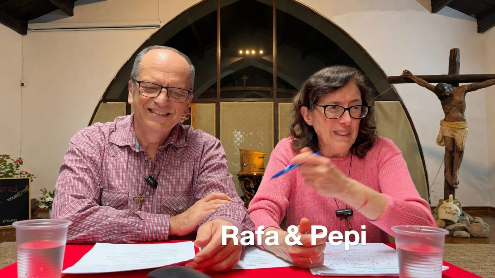

Me llamo Pepi, estoy casada con Rafa y tenemos tres hijos. Soy enfermera. Somos de Linares y, siendo catequista, conocí la Comunidad Misionera Servidores del Evangelio de la Misericordia de Dios.
A través de este camino fuimos descubriendo la llamada de Dios y hoy vivimos nuestra vocación como matrimonio servidor del Evangelio.
Llevamos seis años viviendo en Pinto y participamos, junto con misioneras y otros servidores, en distintas actividades de las parroquias de Santo Domingo y San José, como los grupos de padres de Primera Comunión, el grupo de oración y la Escuela de Evangelización.
Cuando pienso en cómo soy testigo de esperanza, me pregunto:
¿De dónde nace mi esperanza?
¿Qué puedo ofrecer a una persona que está sufriendo y que ha perdido las ganas de vivir?
He trabajado mucho en salud mental con pacientes que sufren mucho por dentro, que no solo están tristes, sino que llegan a sentir que su vida ya no tiene sentido.
Al principio intentaba llevar esperanza humana, con frases bonitas, con consejos, pero me di cuenta de que eso no llegaba.
Fue Jesús el que me enseñó a llevarlo a Él.
Y ¿cómo he experimentado yo el amor de Dios en mi vida para poder llevarlo a otros?
Lo experimenté cuando entendí que Dios no me ama porque yo sea fuerte o buena servidora, me ama porque soy su hija, tal como soy, con mis miedos, con mis defectos y con mis limitaciones.
Y es que yo siempre pensaba que tenía que ganarme su amor haciendo mucho, y un día orando, sentí muy claro: "No tienes que hacer nada para que te quiera, ya te quiero, déjame quererte".
Y eso ¡me cambió! Comprendí que, si yo no me sé amada por Dios, no puedo llevar su amor a nadie.
¡Esa es la clave!
Entonces, ¿qué significa para mí ser testigo de esperanza?
Para mí significa creer de verdad que Jesús está presente también en esa habitación de psiquiatría, junto a esa persona que está sufriendo.
Cuando yo entraba a las ocho de la mañana, después de una noche difícil para un paciente, pensaba que Jesús había permanecido junto a él.
Y cuando ese paciente me dice: "¡No puedo más!", yo veo en él a Cristo crucificado hoy, no es un enfermo más, es Jesús diciéndome: "¡Ámame aquí!"
Yo ya no entro solo a poner medicación, entro rezando por dentro: "Señor, yo no puedo curarle ni llegar hasta donde llega su dolor, pero Tú sí puedes acompañarle, ¡Tócale Tú! Enséñame a tratarle como Tú le tratarías, a mirarle como Tú le miras".
Y he visto milagros pequeños, pero que son enormes; pacientes que llevan meses sin hablar y un día te dicen: "Reza por mí", y yo pienso que quizá algo de ese amor les está llegando, aunque no sepan ponerle palabras.
Ser testigo de esperanza no es decirle: "Todo va a salir bien", es poder transmitirle con mi vida y con mi fe: "Mira, tu vida vale la sangre de Cristo, Dios no te ha olvidado, y aunque tú ahora no puedas rezar, yo rezo por ti, aunque tú no tengas esperanza, yo la tengo por los dos y te la presto hasta que tú puedas volver a encontrarla".
Eso es lo que intento vivir.
Al final he entendido que la esperanza no es simplemente una idea positiva.
La esperanza es alguien y se llama Jesús, y yo no la fabrico, la he recibido gratis porque Él me amó primero.
Y si Él me ama a mí tal como soy, también ama a esa persona que hoy siente que no vale para nada, y mi misión es ayudarla con mi presencia, con mi sonrisa, con mi ternura y con mi oración, porque cuando alguien siente que lo ha perdido todo, saberse acompañado y amado puede ser un primer paso para volver a encontrar sentido a su vida.
Pero Jesús también me enseña a amar en mi familia.
Soy impulsiva, me impaciento y sin darme cuenta, quiero que las cosas se hagan como yo creo que deben hacerse, lo veo, por ejemplo, con mi hijo de 16 años que pronto tendrá que decidir qué estudiar, quiero lo mejor para él, pero a veces intento llevarlo hacia lo que yo elegiría y ahí me doy cuenta de que tengo que aprender a escuchar, a aconsejar sin imponer y a confiar en él, porque amar también es acompañar sin controlar, aunque me cueste aceptar que su camino no sea el que yo había imaginado.
Y descubro que no se trata solo de que yo quiera llevar a Jesús a los demás, también necesito dejar que Él me transforme a mí.
Y en el apostolado también necesito aprender, pongo ilusión en anunciar a Jesús, pero cuando no veo el fruto me impaciento y me salen las quejas.
Quiero ver resultados ¡ya!
En un grupo de padres, hace unos días, tenía que compartir mi testimonio al final, pero me adelanté, y es que tenía tantas ganas de compartir con ellos el amor de Dios que yo he descubierto, que me pudo la impaciencia.
Entonces tengo que volver a Jesús y recordar que puedo sembrar, pero no puedo forzar el fruto.
Necesito aprender a respetar el ritmo de cada persona, sin querer que vivan su encuentro con Jesús a mi ritmo, y seguir anunciándolo, aunque no vea los resultados que esperaba.
Y al final me doy cuenta de que yo también necesito vivir de esa esperanza que quiero llevar a los demás, necesito que Jesús me enseñe cada día a amar, a tener paciencia y a confiar.
Yo no llevo esperanza porque pueda con todo, la llevo porque Jesús me amó primero, porque sigue amándome tal como soy y porque no se cansa de trabajar en mi corazón.
Y eso es lo que deseo como servidora del Evangelio, que allí donde esté, las personas puedan descubrir, a través de mi vida, que Dios no las ha olvidado y que merece la pena encontrarse con Jesús.

